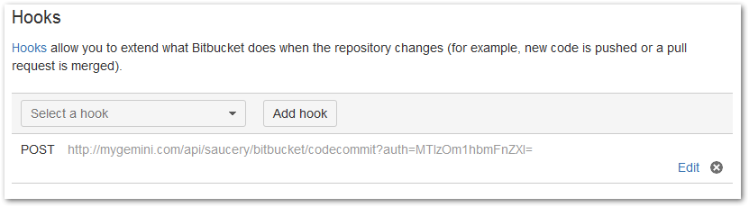
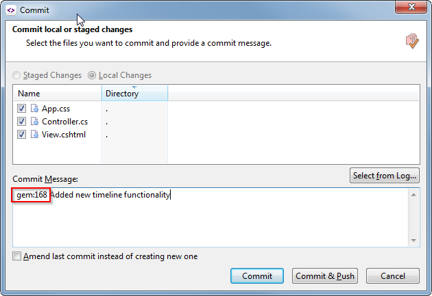
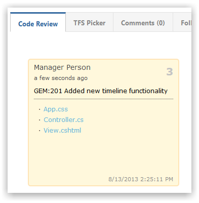
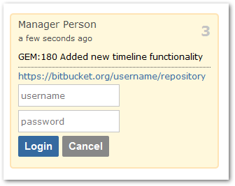

NoteWorks with Gemini version 6.4.1+ and upwards.
Open your Bitbucket repository and navigate to 'Settings'.
Click 'Hooks' and add a new POST hook.

Ensure you specify the URL like below.
http://YOUR GEMINI URL/api/saucery/bitbucket/codecommit?auth=AUTHCREDENTIALS
Replace the AUTHCREDENTIALS with a base64 encoded apikey:username combination, where apikey is taken from the web.config.
When committing files into Bitbucket simply provide a Gemini item number like so.

Notethe 'GEM:' prefix is mandatory and you can specify multiple Gemini items by comma-separating them as part of the commit comment message.
All committed files and comments appear under Code Review as follows.

The first time you click on a file you will need to enter your Bitbucket credentials.
